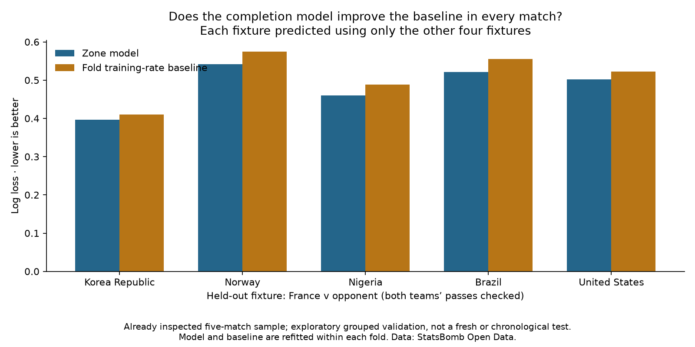

Football analyst training · Phase 3 · Lesson 48
Check more than one match.
Leave one entire match out, learn from the other four, predict the omitted match, then rotate until each has been checked. This is leave-one-match-out cross-validation.
Completed assignment
The zone model has lower log loss than the constant baseline in each of the five fixtures. Across all 3,430 out-of-fold passes, log loss is 0.480 versus 0.506.

Why this matters
A single check match can give an incomplete view. Rotating the held-out match exposes variation. We refit the zone counts and baseline inside each fold, avoiding leakage from held-out outcomes.
This reuses five already inspected tournament fixtures. France appears in every match, and some folds train on later matches. It is exploratory grouped validation, not a future-season test.
Takeaway
“The model improves on its simple reference across these five match checks.” That is stronger than reporting just one favourable fixture, but still does not establish practical reliability.
Run 48_completion_match_cross_validation.py in Spyder. leave_match_out() separates the fixture before fitting. The worked assignment is complete with assistance; ask for detail if this validation concept is new.